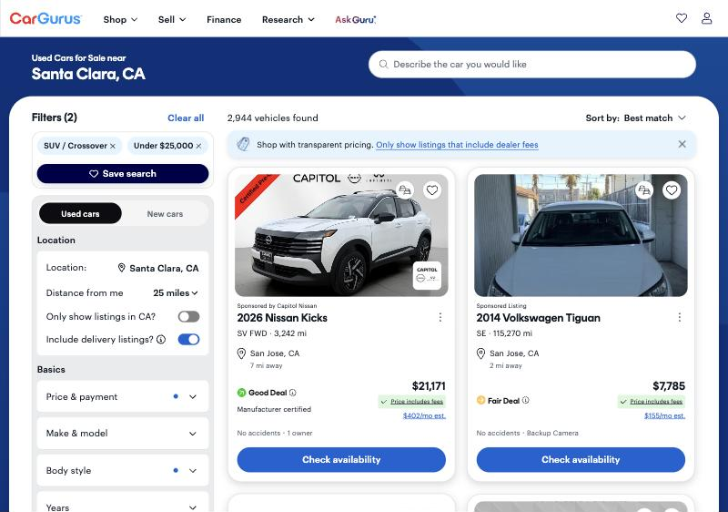
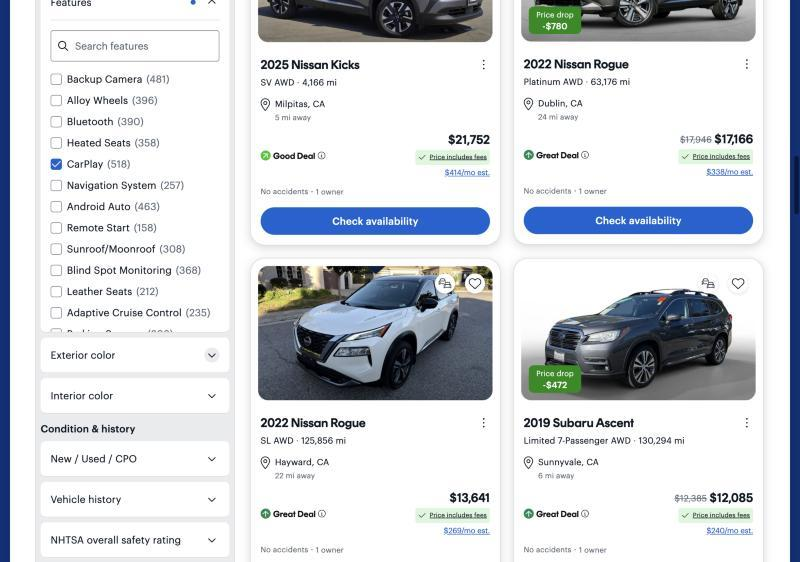
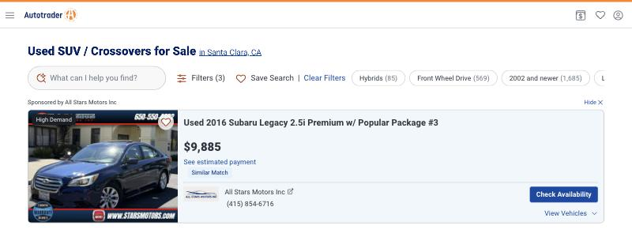
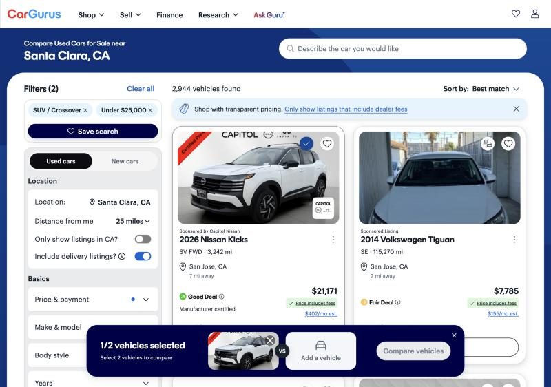
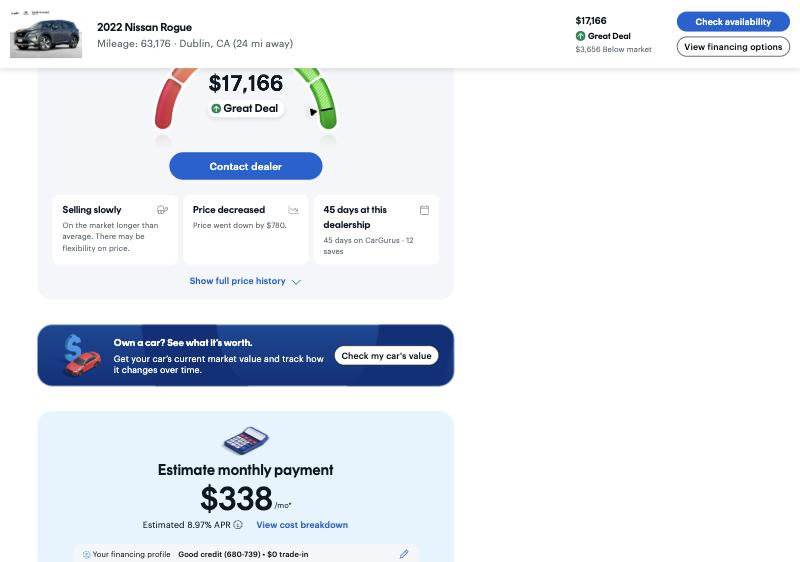

Six shopper tasks, run on CarGurus and Autotrader with the same search, show where getting from a broad search to a shortlist gets hard. The second half turns the biggest gap into a scoped feature for CarGurus, with success metrics and a launch plan.
Each task scored from 1 (painful) to 5 (easy). Darker blue means smoother.
| Shopper task | CarGurus | Autotrader |
|---|---|---|
| Find a used SUV under $25k within 25 milesCarGurus: 2,939 results. Autotrader: 1,690. Both are quick to set up, but CarGurus's layout jumps when the first filter is applied. | 4 | 4 |
| Filter by must-have features (AWD + Apple CarPlay)CarGurus: 518 left. Autotrader: 574 left. CarPlay and AWD sit in two different sections on both sites, and neither says which filters are worth using next. | 4 | 4 |
| Compare 3 shortlisted cars side by sideCarGurus compares straight from the results page, but only 2 cars at a time. On Autotrader no compare control turned up on the results or listing pages. | 3 | 2 |
| Judge whether a listing's price is fairCarGurus: deal rating, dollars below market, price history and days on market. Autotrader: price rating and dollars below expected price, no price history seen. | 5 | 4 |
| Check a car's history and conditionCarGurus shows title, accidents and owners near the top; the full report is paid. Autotrader shows accidents and owners far down the page. | 4 | 3 |
| Contact the dealer about a listingBoth put a contact button and phone number at the top of the listing. Nothing was submitted. | 5 | 5 |
| Average | 4.17 | 3.67 |
Cars left after each step of the same search.
The broad search returned 2,939 SUVs on CarGurus. Adding Apple CarPlay and AWD cut that to 518. Autotrader went from 1,690 to 574. Applying the filters was easy on both sites, which is why the task scored 4, but the outcome is still hundreds of cars away from a shortlist.
The filters sit in seven sections of one long left panel. Every option shows a count, which helps, but nothing suggests which filter to try next. CarPlay is under Features, while AWD is under Specs, well below it.
A row of 19 quick-filter chips sits above its results. Some are useful, like AWD/4WD (970 cars). Others are not: "2002 and newer" would remove 5 of 1,690 cars, and "Beige (7)", "Manual (7)" and "Buick (7)" sit in the same row. The chips do not look ranked by what would help narrow this search.
Deal rating, dollars below market, price history and days on market make price easy to judge, and compare works straight from the results page with no account. The weak spot is the limit of two cars per comparison.





A shopper who starts broad gets thousands of cars, and the usual must-haves do not get them close to a shortlist. In this test, two filters took CarGurus from 2,939 results to 518. CarGurus offers 31 filter groups to keep going, but it leaves the choice of what to try next entirely to the shopper.
Compare scored lower than filtering, so it is the obvious runner-up. Narrowing comes first for three reasons. Every shopper goes through it, while compare only matters to those who already have a shortlist. It sits earlier in the funnel, so friction there affects everything after it. And CarGurus already has the main ingredient on the page: a result count next to every filter option. Autotrader's chips show the idea is workable and also show how a generic version falls short.
Show 3 to 4 suggested filters above the results, picked for the current search. Rank them by how often shoppers running a similar search apply them and by how much each one narrows the list. Each chip shows how many cars would be left, and one tap applies it. Suggestions refresh after every filter, so the shopper always has a sensible next step until the list is short enough to browse.
| Feature | What it does | Gap for this problem |
|---|---|---|
| CarGurus: search filters | 31 filter groups, with a result count beside every option | No guidance on which filters matter for this search |
| CarGurus: deal ratings + Instant Market Value | Rates each listing from Great Deal to Overpriced against an estimated market price | Helps judge price, not narrow a broad search |
| CarGurus: Ask Guru | Conversational search box at the top of the results page | The shopper has to know what to ask for |
| CarGurus: saved searches + alerts | Notifies shoppers of price drops and new matches | Helps once a shortlist exists, not while building one |
| CarGurus: compare | Side-by-side view opened from the results page | Two cars at a time |
| Autotrader: quick-filter chips | 19 one-tap filters with counts above the results | Not ranked for the search, so rare options sit beside useful ones |
| Autotrader: filter search | "Find a filter" box inside the filter drawer | Only helps if the shopper already knows the filter's name |
CarGurus earns revenue from dealers who want their listings seen. Narrower searches mean some listings get fewer views, which could frustrate dealers whose cars get filtered out. The bet is that shoppers who reach a confident shortlist are more likely to contact a dealer, so leads hold up or improve even if raw listing views fall.
50/50 split on used-car search for 2 weeks, or until the result is significant
10% of shoppers, watching guardrails daily
100% of shoppers, with a help-center note and a heads-up to dealer account managers
Task scores, result counts, screenshots, and the script that builds this page are on GitHub.